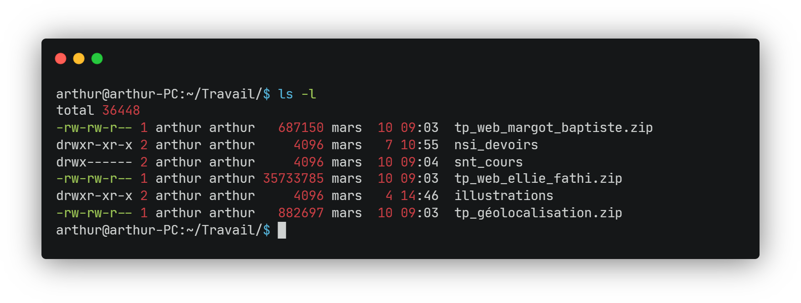

TP Shell

La rédaction du document réponse Capytale est en cours... notez vos réponses dans un fichier texte pour l'instant.
Introduction
Les premiers systèmes d'exploitation étaient dépourvus d'interface graphique. Il n'y avait pas de fenêtres ni de curseur de souris pour interagir avec l'ordinateur. Au lieu de cela, les utilisateurs devaient communiquer avec le système d'exploitation en utilisant des lignes de commandes, qui sont du texte saisi via un programme appelé shell. Le Shell est une interface entre le noyau et l'utilisateur :


Le shell permet à l'utilisateur d'exécuter des commandes et des scripts pour interagir avec le système d'exploitation (exécuter des programmes, gérer des fichiers et des répertoires, contrôler les processus en cours etc.). Le shell est toujours disponible dans les OS actuels et encore très utilisé de nos jours. On se propose dans ce TP de découvrir les commandes de base du shell.
Différence entre shell et terminal
Le terminal et le shell sont souvent confondus dans le langage courant.
-
Le terminal est un programme permet à l'utilisateur de saisir des commandes et de les exécuter en mode texte, sans avoir besoin d'une interface graphique. Il exécute par défaut un shell.
-
Le shell est le programme qui s'exécute à l'intérieur du terminal et qui interprète les commandes saisies par l'utilisateur et qui permet d'interagir avec le système d'exploitation.
Comme il n'est généralement pas possible d'interagir avec le shell sans utiliser un terminal, les deux termes sont confondus. Le terminal est l'interface du shell qui est l'interface du noyau qui est l'interface du matériel. Vous suivez ?
L'arborescence des dossiers et des fichiers
Dans les systèmes d'exploitation basés sur UNIX (par exemple Linux ou macOS), nous avons un système de fichiers et de dossiers en arborescence :


Chemins absolus
On peut accéder à n'importe quel dossier ou fichier grâce à un chemin. Par exemple, /home/joel/images/photo1.jpg permet d'accéder au fichier photo1.jpg. Quand le chemin part de le racine /, on parle de chemin absolu.
Chemins relatifs
On peut aussi accéder à un fichier ou à un dossier grâce à un chemin relatif. Par exemple, si l'on se situe dans le dossier /home/joel, on peut accéder à luge.mp4 grâce au chemin relatif ./images/ski/luge.mp4 : . fait référence au répertoire (dossier) courant. Il est d'ailleurs facultatif.
Il est courant aussi de vouloir revenir en arrière. Par exemple, si l'on se situe dans le dossier /home/joel et que l'on souhaite accéder à rapport.txt, on écrit alors ../ellie/documents/rapport.txt : .. fait référence au répertoire parent.
Questions 1
-
Quel est le chemin absolu pour accéder au fichier
hello.py? -
On se situe dans le dossier
travailde ce fichierhello.py. Quel est alors le chemin relatif à ce répertoire pour accéder àphoto1.jpg?
Les commandes de base
Découvrons les commandes UNIX les plus courantes grâce à au petit jeu Terminux ! Prêt pour l'aventure ?


Dans ce jeu, les différents lieux correspondent à des dossiers et les différents objets et personnages à des fichiers !
Questions 2
Au fur et à mesure de l'aventure :
-
Noter les commandes découvertes et leur fonction :
Nom de la commande Description Utilisation lsLister le contenu d'un dossier. lspuis Enter pour lister les fichiers du répertoire courant.... ... ... -
Remplir aussi le tableau des raccourcis claviers :
Nom de la commande Description Up Down ... Tab ... -
Réaliser le plan du jeu de manière collaborative !


Le lien du diagramme partagé est disponible ici. Il faudra alors vous connectez à votre compte Google du lycée @lyceecivray.net et ouvrir le fichier avec l'application Diagrams. Veuillez respecter le code couleur (copier-coller simplement les nœuds du diagramme) !
Compléments sur les commandes
Un vrai terminal !
Comme Windows diffère des autres systèmes d'exploitation qui sont majoritairement basés sur Unix, son langage de shell est relativement peu utilisé. Ainsi, nous opterons plutôt pour l'émulation d'un système d'exploitation Linux en utilisant JSLinux, un émulateur proposé par Fabrice Bellard. Merci Fabrice.
Questions 3
Dans le document réponse, veuillez bien inscrire les différentes commandes que vous avez utilisées pour répondre aux questions.
-
En inscrivant la bonne commande dans le shell, dans quel dossier sommes-nous quand le système démarre ? Donner son chemin absolu.
-
Que contient ce dossier ?
-
Que contient le fichier
readme.txt? -
Créer le dossier
programmes(grâce à la commandemkdir nom_du_dossier) et y déplacer les 3 fichiers correspondants à des programmes. Sauriez-vous déplacer ces 3 fichiers en une seule ligne de commande ? -
Se déplacer dans ce nouveau répertoire et y créer un fichier vide
bonjour.pygrâce à la commandetouch nom_du_fichier. -
Modifier ce programme Python pour qu'il affiche un message de bienvenue. Pour cela on utilisera l'éditeur nano (
nano nom_du_fichier) : Ctrl+O, Enter pour enregistrer le programme puis Ctrl+X pour quitter l'éditeur. Exécuter le programme ainsi crée grâce au programmepython(python nom_du_fichier_py). -
Dans le répertoire initial (
cd ~), qu'affiche la commandetree? Note : Ne faites pas cette commande à la racine du système/( Ctrl+C pour stopper une commande en cours si jamais).
Les options et les arguments
Les lignes de commande que l'on a écrites jusqu'à présent étaient de la forme :
$ nom_de_la_commande argument1 argument2 ...
Le nombre d'arguments est variable, par exemple :
-
lsne prend aucun argument. -
cdprend un chemin en argument. -
mvprend plusieurs arguments : les noms des fichiers à déplacer et un répertoire de destination.
On peut paramétrer plus finement une commande grâce à des options. Une option s'écrit de deux manières : --option ou -o. La syntaxe courte ne possède qu'un caractère ! Toute ligne de commande s'écrit comme :
$ nom_de_la_commande --option1 --option2 ... argument1 argument2 ...
Questions 4
-
Dans le dossier où se situent les différents fichiers des programmes, exécuter la commande
ls -l. Que fait l'option-l? -
En utilisant l'option
--helpou-hqui permet de lire une description rapide d'une commande, donner l'option qui permet de trier la liste des fichiers affichée parlspar ordre décroissant de taille. -
Exécuter alors
lsavec cette nouvelle option dans le répertoire des programmes. Donner le résultat affiché.
La gestion des droits et permission d'accès aux fichiers
Introduction
Si on exécute ls -l dans le dossier parent :
localhost:~# ls -l
total 8
drwxr-xr-x 2 root root 111 Mar 28 17:35 programmes
-rw-r--r-- 1 root root 151 Jul 5 2020 readme.txt
Si l'on arrive à distinguer à droite, le nom du fichier/dossier readme.txt, la date de dernière modification Jul 5 2020 et le poids du fichier/dossier 151 (en octets), la partie à gauche reste légèrement cryptique ! Un autre exemple sur ma machine :

La correspondance des quatres champs à gauche est la suivante :
drwxr-xr-x 2 arthur arthur
↑ ↑ ↑ ↑
Droits #Liens Utilisateur Groupe
Nous allons voir à quoi correspond ces différents champs, excepté #Liens le nombre de liens, qui n'est pas au programme.
Utilisateur
Un système UNIX est multi-utilisateur, chaque utilisateur (personne physique ou un programme) est identifié par un nom et un identifiant unique (UID), et possède un ensemble de droits qui déterminent les opérations qu'il peut effectuer sur le système, telles que l'accès à un fichier ou à un dossier, l'exécution de programmes, etc.
Questions 5
-
Pour connaître les utilisateurs du système, on consulte le fichier
/etc/passwd. Que contient ce fichier ?Les utilisateurs sont enregistrés au format :
nom:motdepasse:UID:GID:informations:repertoire:shell -
Vous êtes l'utilisateur
root. Quel est votre UID ?
Je suis root !
L'utilisateur root est en fait le super-utilisateur du système qui a tous les pouvoirs sur le système ! Pour exécuter une commande réservée au super-utilisateur, un utilisateur lambda doit utiliser la commande sudo (super user do) qui nécessite de connaître le mot de passe root qui en général n'est connu que de l'administrateur du système.

Groupe
Chaque utilisateur est associé à un ou plusieurs groupes. Ils permettent de regrouper des utilisateurs pour leur attribuer des droits d'accès communs aux fichiers ou applications.
Question 6
Le fichier qui stocke les différents groupes se situe dans le même répertoire que précédemment, sauriez-vous le retrouver ? Que contient-il ?
Les types d'utilisateurs ugo
Avec ces notions d'utilisateurs et de groupes, chaque fichier distingue alors trois types d'utilisateurs :
| Utilisateur | Anglais | Symbole |
|---|---|---|
| Son propriétaire | User | u |
| Un groupe associé | Group | g |
| Les autres utilisateurs | Others | o |
Droits
Il existe trois droits concernant un fichier ou un répertoire :
| Droit | Anglais | Symbole | Description |
|---|---|---|---|
| Droit de lecture | Read | r |
Il est possible de lire le contenu du fichier |
| Droit d'écriture | Write | w |
Il est possible de modifier le contenu du fichier |
| Droit d'exécution | eXecution | x |
Il est possible d'exécuter le contenu du fichier(quand le fichier est du code exécutable) |
Chaque fichier se voit ainsi attribuer pour chaque type d'utilisateurs (propriétaire, groupe, autres) leurs droits correspondants. Toutes ces informations sont encodées dans le champ Droits, par exemple :
-rwxr-xr--
Le champ Droits s'écrit sur 10 caractères :
-
Le 1er caractère
-oudindique s'il s'agit d'un fichier ou d'un répertoire -
Les 9 caractères suivants représentent dans l'ordre les droits
rwxpour les 3 types d'utilisateurs dans l'ordreugo.
Par exemple, la séquence -rwxr-xr-- se décompose comme :
- r w x r - x r - -
└-- u --┘ └-- g --┘ └-- o --┘
| Type d'utilisateur | Droit lecturer |
Droit écriturew |
Droit exécutionx |
|---|---|---|---|
Propriétaire u |
|||
Groupe g |
|||
Autres o |
Modification des droits avec chmod
Seuls le propriétaire et l'utilisateur root peuvent modifier les droits d'un fichier ou d'un répertoire grâce à la commande chmod (de l'anglais change mode).
Elle s'utilise ainsi, en précisant l'utilisateur (a pour tous), l'ajout + ou la suppression - ou la réinitialisation = de la permission et enfin les droits :
chmod [u g o a] [+ - =] [r w x] nom_du_fichier
Par exemple,
chmod g+w bulletin.txt
attribuera la permission de modifier le fichier au groupe associé au fichier bulletin.txt
Questions 7
Dans le document réponse, veuillez bien inscrire les différentes commandes que vous avez utilisées pour répondre aux questions.
-
Créer un fichier vide
test.txtavec la commandetouch. -
Quels sont les permission actuelles du fichier ?
-
Changer les permissions du fichier pour que tout le monde ait les permissions de lecture et d'écriture.
-
Finalement non, enlevez les droits à ces gueux d'utilisateurs
o!